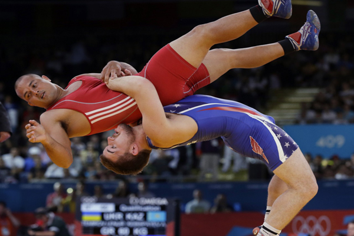
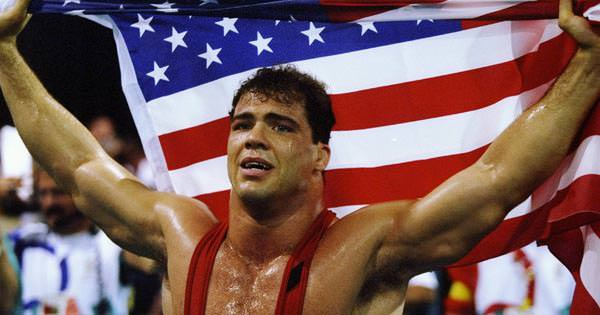
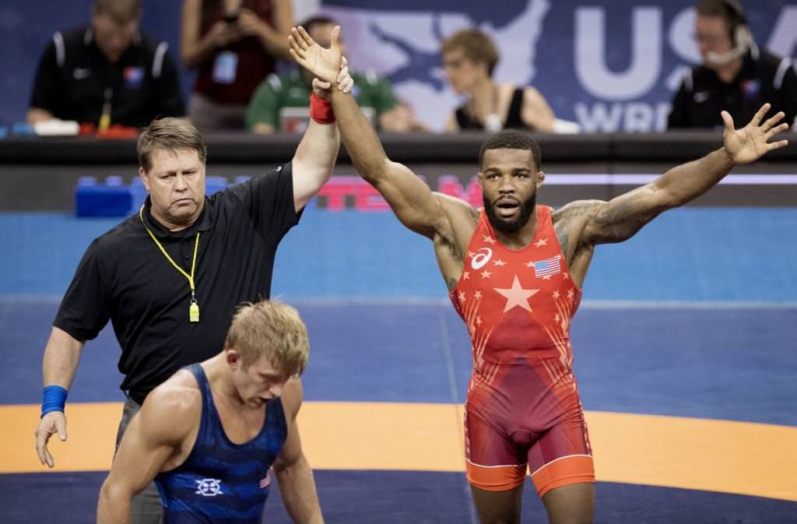
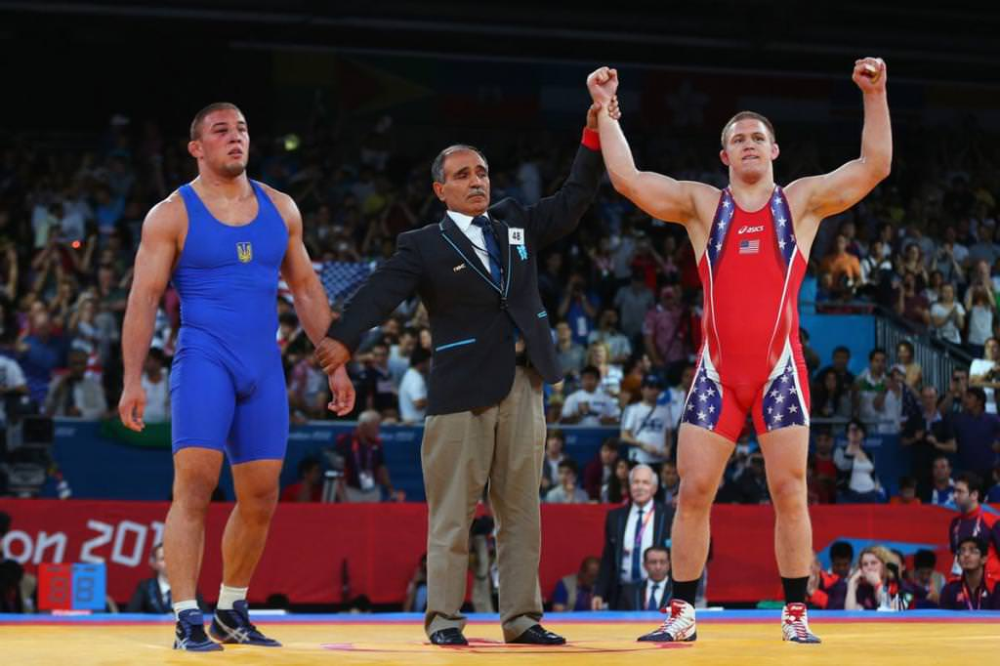

Опис
Вільна боротьба – вид спорту, єдиноборство, в якому бере участь дві людини. Сенс подібної боротьби в тому, щоб покласти свого супротивника на лопатки різними способами – переворотами, кидками, підніжками та ін.
Такий поєдинок триває рівно п’ять хвилин, протягом яких учасник повинен набрати три заповітні очки для перемоги. Якщо жодна з сторін не набирає три очки, поєдинок триває – його продовжують на три хвилини. Якщо і цього разу не буде переможця, бій продовжується доти, поки один із супротивників не набере очки.
Всупереч принципам, вільна боротьба все ж налічує певну кількість правил. Так, вони зовсім не жорсткі, дещо спрощені і вільні, а обмежень встановлено набагато менше, ніж в будь-якому іншому виді спорту.
Історія
Вільна боротьба – досить старий вид спорту, йому нараховують цілі десятиліття. Поширюватися вона почала від Англії, поволі перейшла в Америку, де боротьба набирала обертів серед публіки з-за «диких» прийомів: вивихи суглобів, больові прийоми і так далі.
Вже з 1904 року вільна боротьба включена Сполученими Штатами Америки в Олімпійські ігри. Це принесло американцем набагато більше перемог, ніж іншим країнам їх види спорту.
Стала популярною така боротьба і в Туреччині, і в Ірані – там борців цього виду спорту практично звеличують, як богів, а сам спорт стає національним надбанням країн. Змагання з вільної боротьби тут проводяться дуже активно. Адже багатьом такий вид спорту дуже полюбився.
Боротьба продовжує набирати обертів серед сучасних людей, особливо серед молоді.
Правила
Супротивникам дозволяється робити підсічки, підніжки, різних форм захоплення ногами, чого строго не можна робити, наприклад, у греко-римській боротьбі.
Сутичка триває 5 хвилин, але час додається в залежності від кількості набраних очок. Першість з вільної боротьби дістається тому, хто отримує три очки.
Поєдинок закінчується, коли один з борців укладає другого на лопатки, що називається туше. За це йому присуджується 3 бали, і він стає переможцем.
Дійсно, вільна боротьба відрізняється від будь-якої іншої абсолютно нечисленними і простими правилами. Але, на думку багатьох спортсменів, це в деякому роді навіть ускладнює завдання.
Техніка
Греко-римська, при якій забороняється використовувати будь-які ударні рухи ногами, підніжки, підсічки, захоплення і перевороти.
Дзюдо. Основна фішка цієї техніки полягає в тому, що на учасниках надіто кімоно – національний костюм японської національності.
Самбо. Форма одягу – шорти і спеціальна куртка. Дуже схоже на техніку дзюдо, іноді спортсмени навіть поєднують обидві техніки.
Причини зайнятись боротьбою
Як спортсмени, так і любителі відзначають досить багато причин зайнятися боротьбою. Деякі навіть жартують, що подібний вид спорту допоможе досягти не тільки фізичної сили та витривалості, але й морального спокою. Отже, навіщо ж займатися боротьбою?
Відмінний спосіб почати стежити за собою. Є додаткове правило, яке не стосується самого поєдинку. Чоловіка не випустять на килим, якщо він не пострижений або у нього не пострижені нігті. Це неприпустимо в даному виді спорту.
Збереження молодості. Неважко зрозуміти, що вільна боротьба, як і будь-який інший вид спорту, продовжить життя, допоможе розвинути реакцію, витривалість і силу.
Розвиток спритності. Така якість, як спритність, можна по-справжньому помітити дійсно не у багатьох спортсменів. Зазвичай це стосується боксерів, хокеїстів і, звичайно ж, борців. Вільна боротьба Росії характеризується саме спритністю її спортсменів.
Зміцнення і розвиток м’язів. Здавалося б, як тут розвиватися м’язам, якщо супротивники просто кидають один одного на підлогу, пинаются і штовхають один одного? Насправді ж задіяні практично всі м’язи, а навантаження – не з легких.
Протипоказання
Оскільки основне навантаження під час поєдинку лежить на хребті, категорично забороняється займатися таким видом спорту з будь-якими проблемами, які пов’язані з хребтом. Це може не тільки згубно вплинути на стан кісток, але й ускладнити пересування (параліч).